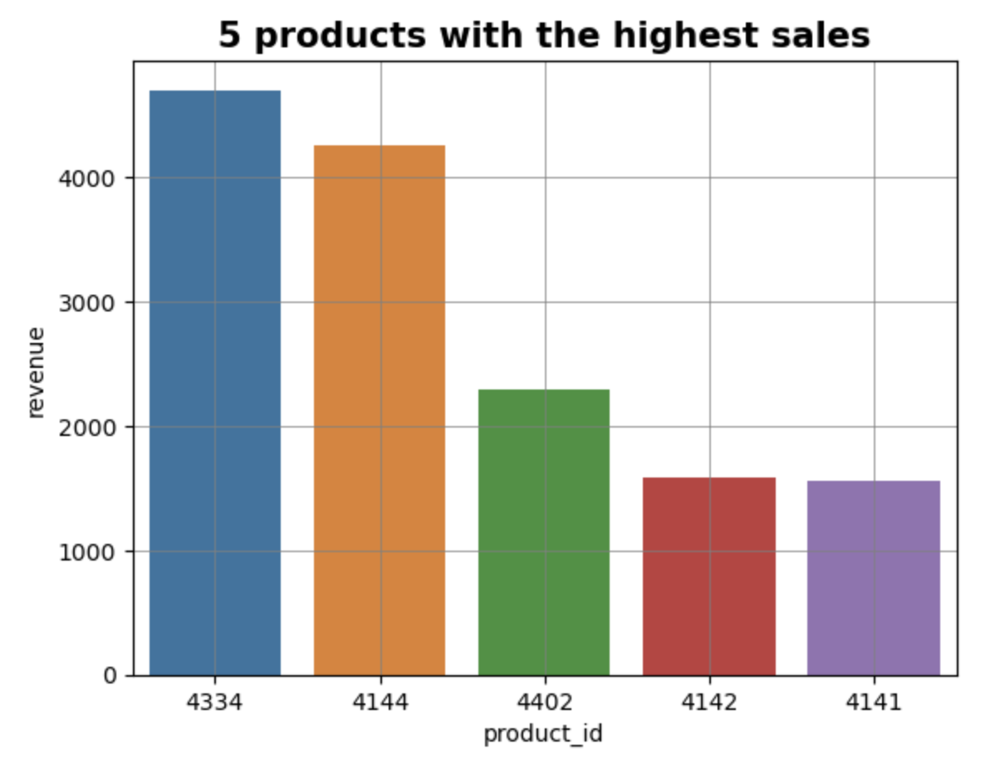
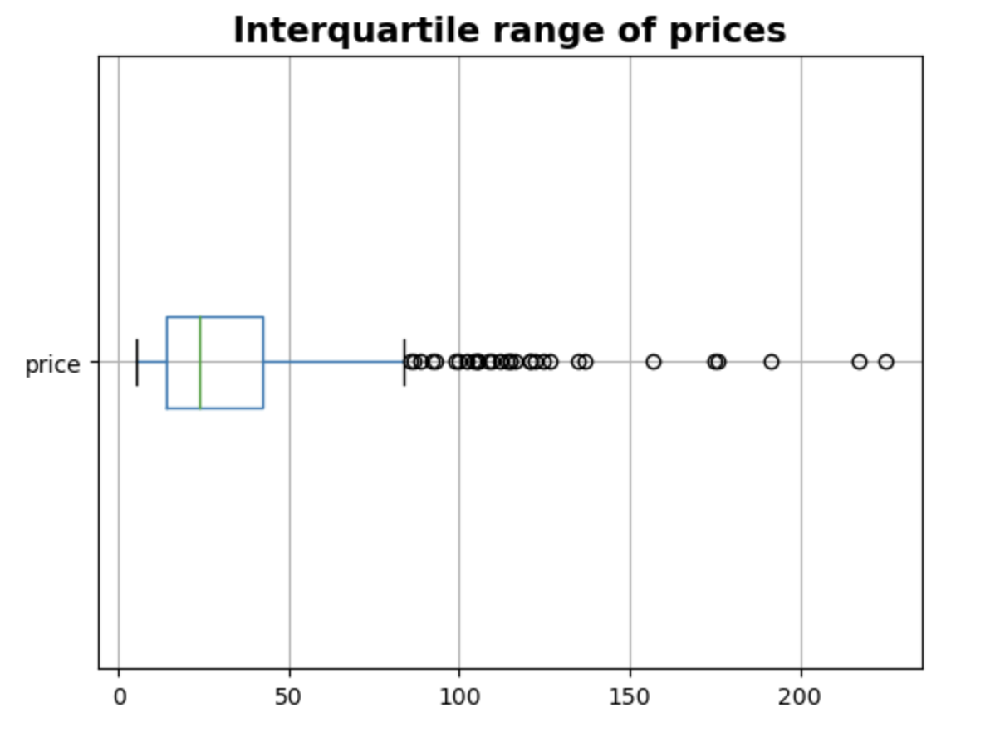
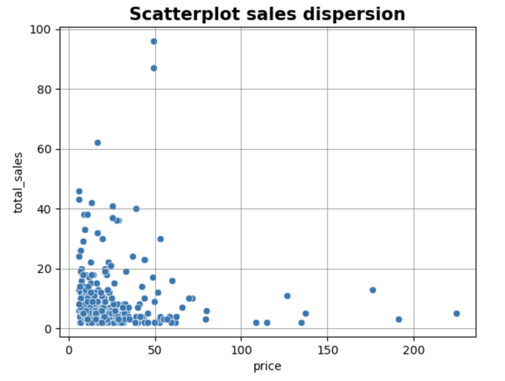

Bottleneck
Project as a freelance data analyst at BottleNeck, a wine merchant.
To manage resources, customers, etc., they used an ERP that is totally unrelated to their online sales site. The tools in place were home-made making the stock management complex, and the visibility in terms of sales analysis on the Net limited, as few people have access to the back-office.
Pending a more centralized solution, a reconciliation between the 2 databases was necessary.
The assignment was divided in 3 points:
- Reconcile two exports: one from the ERP containing product references, selling price and
stock status, and one from a table in the CMS tool containing information on products
marketed online (name, description, number of sales...).
The export from the online store contains the number of sales for each product since it was put online but does not allow you to analyze the evolution of sales over time.
- Compute the sales per product, as well as the total sales generated online.
- Check any input errors in some of the product prices. Carry out an analysis on the variable to detect any outliers, list them and graph them for greater readability.
Data used:
- Data from the ERP - erp.xlsx
- Product table file from online sales platform - web.xlsx
- Excel spreadsheet to establish link between the product reference in the ERP and the reference of the same product in the online store database - liaison.xlsx
Partial result:


